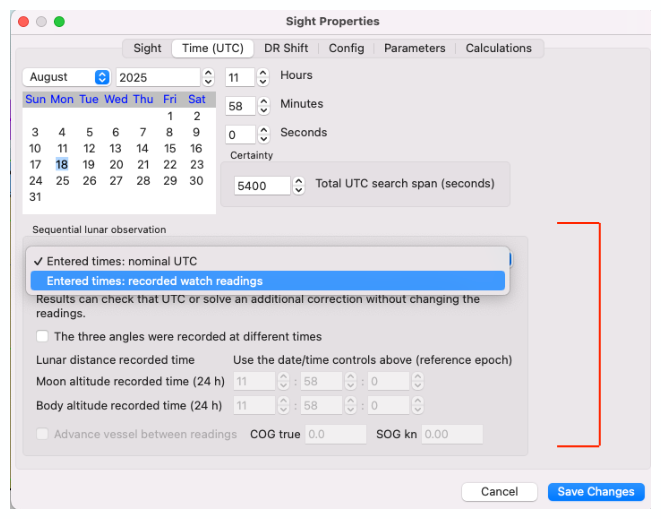

| Previous | Contents | Next |
Lunar distances · Page 48 of 70
Lunar Distance Use Case 1 “Sun-Moon” Aug 18, 2025 11:58
6. Input Lunar Sights into Celestial Navigation Plugin
 |
| Open illustration at full size |
Sequential lunar observation (new feature 2.8.x) Entered times : nominal UTC is the default setting. In this option, you are using an average UTC Time (and DR Position) for the 2 Altitude sights and Lunar Sights, And the UTC average to approximately the same time. This is the assumption of the Use Case 1.
Entered times: recorded watch readings. On the other hand, if the Altitude Sights have significantly different time, input separate times for the Altitude Sights. A Good example, would be 1 Altitude Sight for Body, 1 for Moon, and 1 Lunar Distance. Input the times them individually.
And if the vessel is also moving during the sights, “Advance vessel between readings” and input COG and SOG. Try it, see the impact.
The plugin supports both processes.
| Previous | Contents | Next |